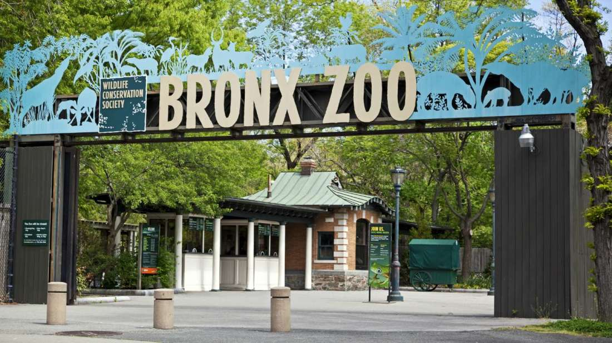

| Photo | Description |
|---|---|
|  | Bronx Zoo: The Bronx is home to the Bronx Zoo, one of the largest zoos in the world. Since 1899, millions of visitors have flocked to the Bronx to catch a glimpse of exotic animals from every corner of the world. Known for housing unique and endangered species, the Bronx zoo is the perfect spot to catch up on some much-needed knowledge about animals. |
| New York Botanical Garden: Stop and smell the roses. Since 1891, the New York Botanical Garden has offered millions an escape from the hustle and bustle of the city streets. The expansive gardens contain beautiful sights, like green lush forests, vibrant gardens and a rushing waterfall. From Grand Central Terminal, ride the Metro-North for an easy 20-minute escape to the Bronx’s own lush paradise. | |
| Yankee Stadium: Although the new stadium isn’t considered an historic landmark, it has elements of the original ballpark that hosted a series of historic and celebrated events. Open to the public since 2009, the ballpark contains a museum featuring monuments and retired numbers of former famed Yankee players like Babe Ruth and Lou Gehrig. The famed stadium’s museum also features a ball wall that contains hundreds of baseballs signed by Yankee players. | |
| Fordham University Church: Located on the grounds of Fordham University, a Jesuit institution, this stunning 19th century church looks as if it belongs in the pages of a Gothic novel. Built in 1845, rumor has it that celebrated American poet and Bronx native, Edgar Allen Poe, was inspired by the grand church to write his poem “The Bells.” Today, students, staff and visitors continue to admire the church’s breathtaking interior and celebrated gothic-style architecture. | |
| Edgar Allen Poe Cottage: At the heart of the bustling Bronx stands a small, quaint cottage that belonged to the famed American poet, Edgar Allan Poe, during the 18th century. The humble space was a source of great inspiration and despair for the talented writer. It is believed that Poe penned some of his most celebrated works during his years at the cottage. For five dollars, curious fans of Poe can explore the home that produced great misery and happiness for the writer. |